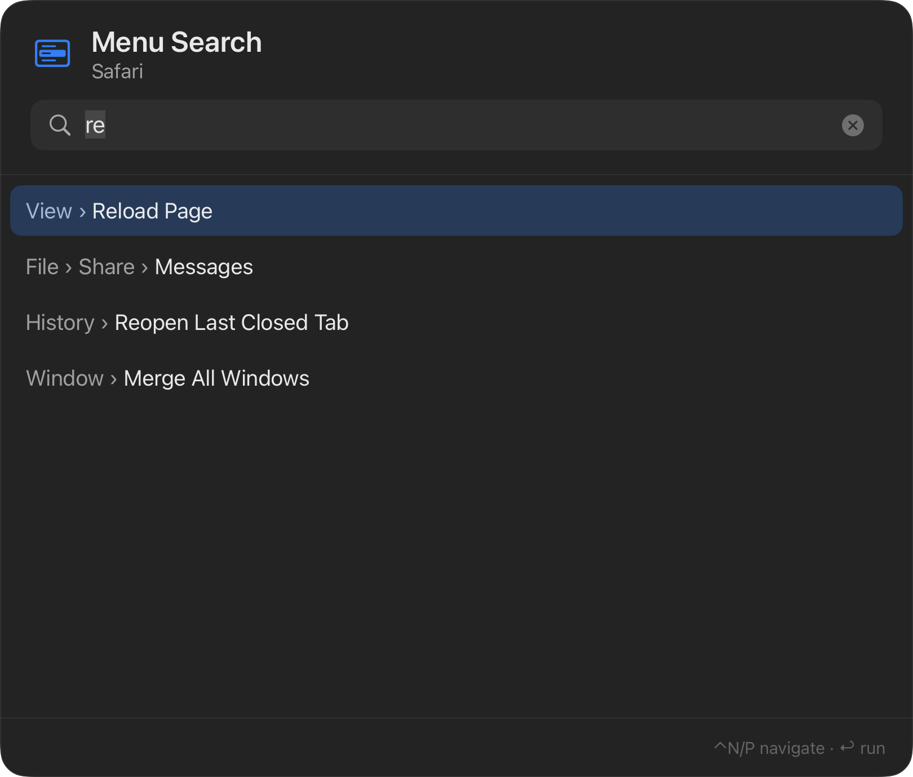
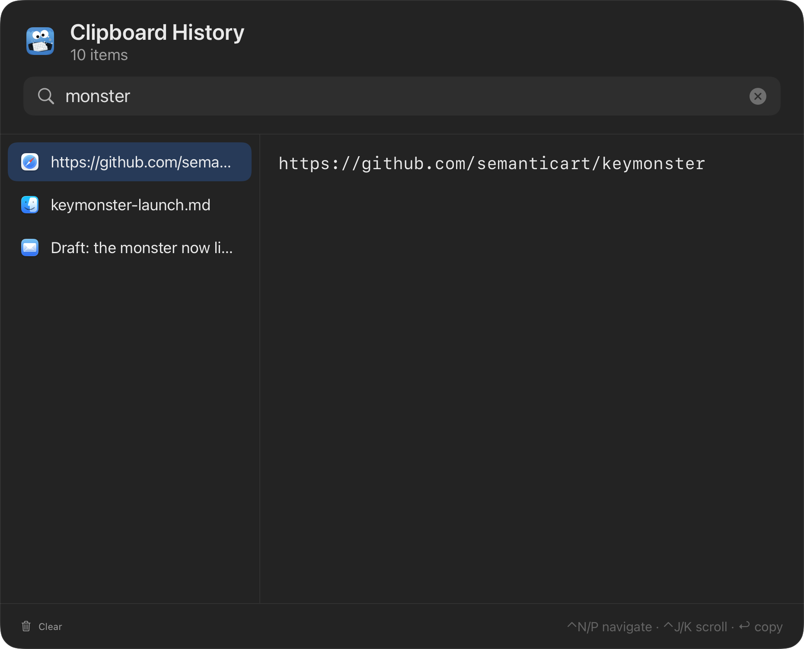
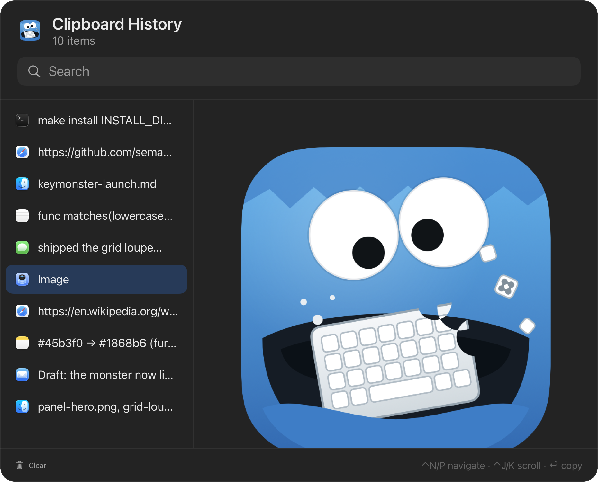

A menu-bar monster for macOS
Ditch the mouse. Feed it your clipboard.
Key Monster hands your whole Mac to the keyboard: click anything on screen, jump the caret, run any menu item, and hop between apps — no mouse required. And it quietly remembers everything you copy — text, images, files — handing it back from a fast, searchable panel.
Keyboard tricks
Teeth for your whole Mac
Key Monster gives every mouse-shaped chore a keyboard-shaped answer: click it, jump to it, or search for it — without leaving the home row.
Click hints
Vimium, but for your whole Mac. Every clickable element grows a home-row label — type it to click. Works on native apps, Safari, Chrome, and Electron. Crowded spots get a green label that zooms in for a closer look.
Grid click
No element to label? Overlay a grid where each cell mirrors your keyboard — the key under your finger names the cell in the same spot on screen. Each press zooms in like a loupe until the click lands, pixel-precise.
Text jump
Press the chord, then any character: every visible occurrence in the focused field gets a label, and typing one drops the caret right there. Works in native fields and web text areas alike.
App focus
Bind a chord to one app — or several. Press it to focus the first; press again to cycle through the rest. One combo can rotate through Slack, Chrome, and your terminal.
Menu search
Fuzzy-find any menu item in the frontmost app and run it with Return — no more spelunking through nested menus for that one command you use twice a year.
Script shortcuts
Point a chord at any executable file and Key Monster runs it in the background — failures land in a log with a one-click way to read it.
Menu search
Every menu item, three keystrokes away
The same search-first panel, pointed at the frontmost app's menu bar. Fuzzy matching means "re" finds Reload Page, Reopen Last Closed Tab, and Merge All Windows — ranked, with the full breadcrumb so you know exactly what will run.

Clipboard history
Everything you copy, one chord away
The mouse isn't the only thing Key Monster eats. It lives in the menu bar — no Dock icon, no windows lying around — recording what you copy and giving it back the moment you ask.
Search first, paste faster
One shortcut opens a centered panel with the cursor already in the search field. Matching runs across text content, file names, and the source app's name — type "safari" and see everything you copied from Safari.
Return doesn't just copy — it pastes, synthesizing ⌘V into the app you were just using. No switching back, no second shortcut.
- ⌃N/⌃P move the selection
- ⌃J/⌃K scroll long previews
- ↩ paste into the previous app
- esc vanish


Not just text
Images from Preview or your browser, files copied in Finder, rich text with its formatting — each entry keeps the icon of the app it came from, and the preview pane shows the whole thing: the complete text, the full image, every file path.
History is stored locally in SQLite, survives restarts, deduplicates repeat copies, and keeps the last 10,000 items.
Boring, in the good way
Local, quiet, respectful
Nothing leaves your Mac
History lives in a local SQLite database. No accounts, no sync service, no telemetry — there isn't even a network permission to grant.
Password-manager aware
Key Monster honors the nspasteboard.org convention: clipboard contents marked concealed or transient — like copied passwords — are never recorded.
A background accessory
No Dock icon, no app switcher entry, no window until you summon one. Just a small monster in the menu bar, waiting for a chord.
Install
One download and it's yours
Requires macOS 14 or later. The app is signed and notarized by Apple — download it, drag it to Applications, done. Prefer no binaries to trust? Build from source and read every line first.
Always the latest release · or build from source:
$ git clone https://github.com/semanticart/keymonster
$ cd keymonster
$ make install
# builds a signed release .app and puts it in /Applications